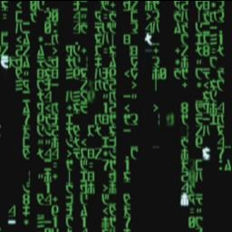

A Little Bit About This Page
Posted on December 1st, 2011 by Eric Hecht
This is my Letter To Self. Well hey there, how was the time. I hope you had a fun ride to your 27th year. Ten years from when I will have written this. As you probably can guess it is hard to write a letter to yourself but hey I can try. Well this is my senior year in highschool. Having a ton of fun. This is the first year I asked a girl out on a date and got a yes! At the time that I'm writing this I have no idea how the relationship goes but hopely you had some fun. On this type of topid did you get married? Hope you had some fun dating and finding my/we/our? future mate. Say hi from the me in the past! Anyways, as I said earlier I am a senior in highschool. We are about to start the robotics season in january and that is bound to be fun. Right now I am vigoursly involved in playing some fun games. League of Legends (is that still around?), Minecraft (any sequels?), Skyrim (plz tell me that they made a sixth game!), And Legend of Zelda (does dad still love that series?). And for that matter say hi to dad from me! (He'd better be alive otherwise you are leaving right now to go pay your respects at his grave, if possible!!) Anyways I cant wait for college I hope that was a lot of fun. So how many of your friends from the past are you still in contact with ? Where do you work? I hope you have given thought to maybe starting your own buisness, I do believe that I liked the idea of Cryotech industries a lot. You should start that up. Did you ever meet Crystal? (Shi Akuma~ from LoL). Well have fun continue to enjoy the ride. And if your aren't going to church on sundays you really need to!
Veni, Vidi, Vici
Your Past Self Eric.
A Wise Quote
''The general who wins the battle makes many calculations in his temple before the battle is fought. The general who loses makes but few calculations beforehand.'' ~ Sun Tzu